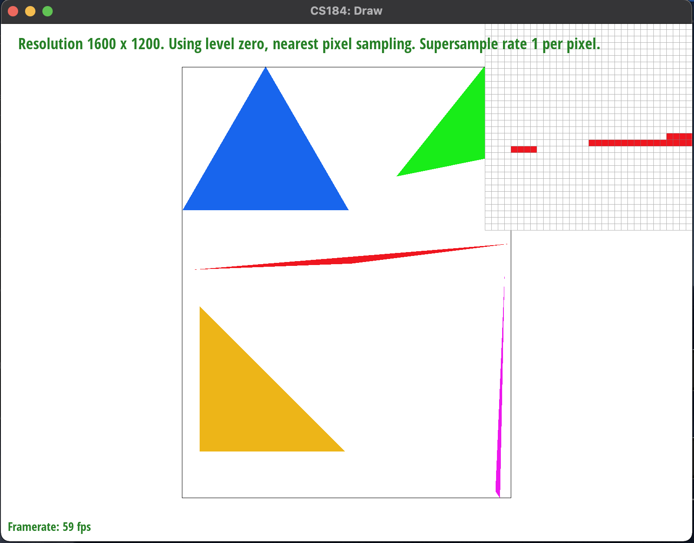

To rasterize a triangle, we first must define a bounding box, which is the smallest box that can encompass a given triangle. This is found by finding the leftmost, topmost, bottommost, and rightmost coordinates of the given 6 points. This allows us to start a nested for loop that starts from the top left of a bounding box and goes into the bottom left, iterating through all the points in the box.
Now, we had to check if the center of a point (which is calculated by simply adding 0.5 to the point) was within the bounds of the provided triangle. To do this, we created an inside() helper function, which takes in an (x, y) coordinate, as well as the 6 x/y values of the triangle, and then calculates which is the inside of the triangle using the three line test method of finding if a point is inside a given triangle. In this case, we returned a true value if the result was >= 0, so this includes edge cases.
There's a slight caveat to this. The winding order of the triangle, that is the rotational direction the points are provided in, affects the results of the inside function. We had to first check the rotation of the triangle before passing in any values, and swap two of the coordinates to flip the winding order.
Once we know a point is inside the triangle, we can call the provided rasterize_point() function to fill in the sample buffer at that pixel with the provided color
